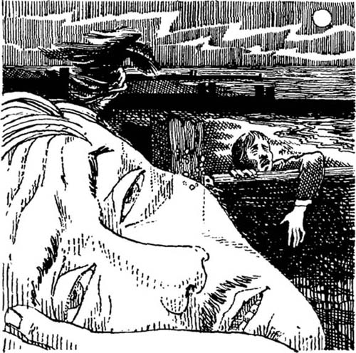

Listen to Part 1:
Burnstow là một thị trấn nhỏ bên bờ biển. Mùa hè, thị trấn trở nên nhộn nhịp. Nhưng trong phần còn lại của năm, nó là một nơi yên tĩnh. Chỉ có một số ít người tới Burnstow vào mùa xuân và mùa thu. Họ tới để chơi golf.
Giáo sư Parkins đã tới Burnstow vào mùa xuân năm 1902. Ông ở tại một quán trọ nhỏ tên là The Globe. Quán trọ The Globe nằm rất gần biển.
Chỉ có hai phòng dành cho khách tại quán trọ. Một phòng có khách, nên Giáo sư phải ở phòng còn lại. Quản lý quán trọ dẫn Giáo sư lên phòng.
Quản lý mở cửa phòng và cho Giáo sư xem.
Ông nói, 'Đây là phòng, thưa ông. Có hai giường. Cả hai đều thoải mái. Ông có thể chọn giường mình thích. Ông cũng có thể nhìn ra biển từ cửa sổ.'
Giáo sư Parkins nhìn ra ngoài cửa sổ. Bãi biển chỉ cách đó một trăm yard. Biển trông xám và lạnh. Rồi Giáo sư nhận ra rằng không có rèm cửa sổ.
Ông nói, 'Ông quản lý, không có rèm cửa sổ.'
Quản lý quán trọ nói, 'Tôi rất xin lỗi, thưa ông. Tôi sẽ bảo người giúp việc lắp rèm.'
Chiều hôm đó, Giáo sư Parkins gặp người khách kia. Tên của người đó là Đại tá Wilson. Họ quyết định chơi golf cùng nhau.
Hai người đàn ông đi bộ dọc theo con đường tới sân golf. Họ trò chuyện về cuộc sống và công việc. Đại tá Wilson từng phục vụ trong quân đội ở Ấn Độ. Ông đã ở Ấn Độ nhiều năm.
Listen to Part 2:
Giáo sư Parkins nói, 'Tôi là một nhà khảo cổ học. Tôi tìm hiểu về lịch sử bằng cách khai quật những công trình cổ.'
Đại tá hỏi, 'Có công trình cổ nào tại đây ở Burnstow không?'
Giáo sư đáp, 'Tôi tin là có một nhà thờ cổ nào đó gần sân golf. Nhưng nó đã bị phá bỏ vào thế kỷ 14.'
Đại tá hỏi, 'Tại sao vậy? Không bình thường khi phá bỏ một nhà thờ, đúng không?'
Giáo sư đáp, 'Đúng vậy. Tôi không biết tại sao nó lại bị phá bỏ. Đó là lý do tại sao tôi muốn tìm kiếm. Tôi muốn tìm thấy nơi đặt của nhà thờ.'
Họ chơi golf trong phần lớn thời gian buổi chiều.
Đại tá hỏi, 'Chúng ta trở về quán trọ uống đồ uống trước bữa tối chứ?'
Giáo sư nói, 'Tôi sẽ gặp anh ở quán trọ sau nửa giờ. Tôi muốn đi tìm nhà thờ cũ trước.'
Đại tá nói, 'Đừng về trễ. Sắp tối rồi.'
Đại tá đi dọc theo con đường về phía quán trọ. Giáo sư đi về phía bãi biển. Ông cúi xuống nhìn mặt đất một cách cẩn thận.
Listen to Part 3:
Có nhiều hòn đá lớn, màu xám nằm gần bãi biển. Những hòn đá được bao phủ bởi cỏ. Chúng nằm theo hình tròn.
Giáo sư dùng chân chạm vào một hòn đá. Hòn đá chuyển động. Có một lỗ bên dưới hòn đá.
Giáo sư Parkins nhìn vào lỗ hổng. Trong lỗ hổng tối và ông không nhìn thấy gì. Vậy nên ông châm một que diêm. Gió thổi tắt diêm.
Ông đưa tay vào trong lỗ hổng. Lỗ hổng trống rỗng.
Không phải - ông đã nhầm. Những ngón tay của ông chạm vào thứ gì đó bằng kimloại. Ông kéo nó ra khỏi lỗ hổng. Đó là một miếng kim loại dài khoảng bốn inch. Nó đã cũ và bẩn. Ông bỏ nó vào túi.
Gió thổi từ biển vào lạnh buốt và bầu trời nhiều mây. Trời sắp tối. Giáo sư Parkins quyết định quay lại quán trọ.
Quãng đường đi bộ dọc theo bãi biển về quán trọ không dài, nhưng lại có những bức tường chắn sóng trên bãi biển. Giáo sư leo chậm và kỹ qua từng bức tường chắn sóng. Vất vả quá. Ông dừng lại để nghỉ ngơi.
Ông nhìn lại phía sau và thấy một người khác đang đi cách mình khoảng một trăm yard. Người kia cũng dừng lại. Trời đã tối nên Giáo sư không nhìn thấy rõ. Ông không thấy rõ người kia trông thế nào. Một bóng đen trên bờ biển đang nhìn ông. Là đàn ông hay đàn bà? Hay là một thứ gì đó khác?
Giáo sư đột nhiên cảm thấy sợ. Ông không muốn gặp hình dáng kỳ lạ này trên bãi biển tối. Ông nghĩ rằng có người đi theo mình. Ông bắt đầu chạy, nhưng cát thì mềm và sâu và các bức tường chắn sóng thì cao. Ông cảm thấy mình đang chạy như đang trong mơ.
Cuối cùng, ông cũng tới quán trọ. Ông nhìn quanh. Không có ai ở trên bãi biển tối đằng sau ông. Ông thấy lạnh, mệt và rất mừng vì được vào trong một quán trọ ấm áp.
Listen to Part 4:
Đại tá đã đợi ông. Họ ăn tối cùng nhau và trò chuyện về golf. Giáo sư lên phòng mình.
Khi cởi áo khoác ngoài, ông nhớ tới mảnh kim loại trong túi. Ông lấy nó ra và xem nó dưới ánh nến. Đó là một tiếng còi rất cổ.
Ông cố thổi tiếng còi. Nhưng chẳng tạo nên âm thanh nào. Tiếng còi đầy bùn đất.
Giáo sư Parkins lấy ra một con dao bỏ túi nhỏ. Ông đi tới cửa sổ để làm sạch bụi bẩn ra khỏi tiếng còi.
Ông thấy rằng vẫn không có rèm cửa sổ. Ông mở cửa sổ nhìn ra ngoài. Trời tối. Không có trăng. Nhưng Giáo sư nghĩ rằng có ai đó đang đứng trên bãi biển.
Ông nhanh chóng vệ sinh tiếng còi rồi quay lại ngọn nến. Bây giờ ông có thể nhìn thấy các ký tự khắc trên tiếng còi. Đó là các chữ cái — QUIS EST ISTE QUI VENIT.
Tiếng Latin! Giáo sư nghĩ. “Quis est iste qui venit” nghĩa là — “Có ai đến không?”
Giáo sư cố thổi tiếng còi.
Ông nghĩ, sẽ chẳng có ai đến cả. Nhưng ông vẫn đưa tiếng còi lên môi và thổi.
Tiếng thổi từ tiếng còi trong trẻo và cao vút. Đó là một giai điệu buồn. Đột nhiên gió thổi mạnh qua cửa sổ đang mở. Nến vụt tắt. Giáo sư bất ngờ và sợ hãi. Ông đứng trong bóng tối lắng nghe tiếng gió.
Listen to Part 5:
Ông bước chậm qua căn phòng. Ông đóng cửa sổ. Nhưng gió vẫn thổi. Gió thổi quanh quán trọ tạo thành tiếng ồn khủng khiếp.
Giáo sư thắp lại nến bằng que diêm. Ông cảm thấy mệt mỏi và lạnh. Ông đặt tiếng còi lên bàn rồi cởi đồ. Sau đó, ông lên một trong hai chiếc giường và thổi tắt nến.
Khi nhắm mắt lại, ông mơ thấy mình đang ở trên bãi biển. Ông nhìn thấy các bức tường chắn sóng lớn. Trời tối nhưng ông nhìn thấy rõ mọi thứ.
Ông thấy có người đang chạy. Vài giây, người đó lại nhìn ra đằng sau. Người đó có vẻ sợ hãi và mệt mỏi. Người đó leo qua từng bức tường chắn sóng một cách chậm chạp. Cuối cùng, người này gục ngã trên cát và nằm im bất động. Khuôn mặt của người này trông vô cùng kinh hoàng.
Phía sau người đó là một ai đó hoặc một thứ gì đó đang chuyển động rất nhanh. Nó ngày càng tới gần. Đó là một bóng đen kỳ lạ. Nó ngày càng tới gần người nằm trên bãi biển. Nó dừng lại. Rồi nhảy xổ vào người đó.

Giáo sư Parkins mở mắt. Ông quá sợ hãi để nhìn tiếp xem chuyện gì xảy ra. Cứ nhắm mắt lại, ông lại gặp giấc mơ đó.
Cuối cùng, ông tìm thấy que diêm và thắp nến. Cầu một thứ gì đó di chuyển dưới gầm giường. Ông nghĩ đó là chuột.
Giáo sư Parkins không ngủ lại được nữa. Khi sáng sớm, ông xuống nhà ăn sáng.
Đại tá nói, 'Anh trông không khỏe. Đá golf sẽ giúp anh thấy khỏe hơn.'
Listen to Part 6:
Giáo sư đáp, 'Được chứ. Tôi cần hít thở không khí trong lành.'
Sau bữa sáng, Giáo sư lên phòng lấy mũ. Người giúp việc đang dọn phòng ông.
Cô giúp việc nói, 'Chào buổi sáng, thưa ông. Đêm qua gió lạnh và to. Ông muốn thêm chăn không?'
Giáo sư nói, 'Được, cô làm ơn'.
Cô giúp việc hỏi, 'Ông muốn tôi để ở giường nào, thưa ông?'
Giáo sư đáp, 'Giường tôi ngủ đêm qua.'
Cô gái nói, 'Nhưng ông đã ngủ cả hai giường. Tôi thay ga sạch ở cả hai giường.'
Giáo sư nói, 'Tôi thấy vậy à? Đặt chăn ở giường góc phòng kia đi.'
Người giúp việc vừa xong việc, Giáo sư liền ra khỏi phòng. Ông khóa cửa và để chìa khóa vào túi.
Ông gặp Đại tá ở dưới tầng. Họ đi dọc theo con đường về phía sân golf.
Listen to Part 7:
Đại tá nói, 'Đêm qua gió rất to. Khi Ấn Độ xảy ra bão, chúng tôi thường nói rằng có ai thổi còi gọi gió tới.'
Giáo sư chậm rãi nói, 'Vậy thì tôi đã thổi còi đêm qua, và sau đó gió tới.'
Đại tá nói, 'Thật là kỳ lạ. Nói cho tôi nghe xem, đó là loại còi gì?'
Giáo sư kể cho Đại tá về tiếng còi. Ông kể cho Đại tá cách mình tìm được tiếng còi. Ông kể rằng mình đã vệ sinh nó và thổi nó. Ông không kể với Đại tá rằng mình không hề ngủ đêm qua.
Đại tá lắng nghe nhưng chẳng nói gì. Họ chơi golf cho tới tận chiều muộn.
Họ đi bộ dọc theo con đường về phía quán trọ. Giáo sư không muốn đi bộ dọc theo bãi biển.
Họ sắp đến quán trọ thì có một cậu bé chạy về phía họ. Cậu bé chạy thẳng vào Đại tá và ngã xuống.
Đại tá cáu kỉnh hỏi, 'Có chuyện gì vậy? Nhìn đường xem!'
Cậu bé sợ lắm. Đại tá lại hỏi, 'Con đang chạy trốn ai vậy?'
Cậu bé vừa khóc vừa trả lời, 'Sinh vật trong cửa sổ'.
Listen to Part 8:
Đại tá hỏi, 'Sinh vật nào? Đưa chúng tôi tới đó.'
Cậu bé dẫn họ tới mặt tiền Quán trọ The Globe. Cậu chỉ vào một cửa sổ ở phía trên.
Cậu bé nói, 'Nó ở trên đó. Nó vẫy tay với con. Nhưng nó là một sinh vật kinh khủng. Con nghĩ nó không sống đâu!'
Đại tá nói, 'Đừng sợ. Có ai đang cố làm con sợ thôi. Về nhà và quên chuyện này đi'.
Đại tá nhìn về phía Giáo sư.
Ông hỏi, 'Đó là cửa sổ phòng anh đúng không?'
Giáo sư nói, 'Đúng rồi. Có gì đó kỳ lạ. Anh đi lên phòng với tôi chứ?'
Hai người đàn ông cùng nhau lên phòng. Giáo sư khóa cửa phòng. Ông mở cửa bằng chìa khóa của mình.
Bên trong phòng, một chiếc giường không gọn gàng. Một chiếc ga giường nằm trên sàn nhà cạnh cửa sổ. Giáo sư gọi cô giúp việc.
Giáo sư hỏi, 'Ai đã tới phòng tôi?'
Listen to Part 9:
Cô giúp việc trả lời, 'Không có ai cả, thưa ông. Chỉ có hai chìa khóa cho căn phòng này. Ông và quản lý quán trọ mỗi người có một chìa.
Giáo sư đi tìm quản lý quán trọ.
Quản lý nói, 'Tôi không vào phòng ông khi ông đi ra ngoài, thưa ông.'
Giáo sư và Đại tá cùng nhau ăn tối.
Giáo sư nói, 'Tôi không hiểu. Làm thế nào mà ai đó lại có thể vào một căn phòng bị khóa?'
Đại tá nói, 'Cho tôi xem tiếng còi anh kể với tôi đi.'
Giáo sư đưa nó cho ông ấy.
Đại tá hỏi, 'Anh định làm gì với nó?'
Giáo sư đáp, 'Tôi sẽ tặng nó cho viện bảo tàng.'
Đại tá nói, 'Ném nó ra biển đi. Tôi lên giường đây. Hãy gọi tôi nếu anh cần tôi ban đêm.'
Listen to Part 10:
Giáo sư Parkins tới phòng mình. Đêm đó trời quang đãng và trăng sáng. Ánh trăng rực rỡ chiếu vào qua cửa sổ. Vẫn không có rèm cửa. Giáo sư tức giận.
Ông nghĩ, Ánh trăng sẽ rọi vào phòng làm tôi không ngủ được mất thôi. Ông quyết định lấy ga trải giường phủ lên cửa sổ. Ông lấy một chiếc ga giường từ chiếc giường không có ai nằm và phủ nó lên giá rèm cửa. Sau đó, ông lên chiếc giường của mình và đi ngủ.
Ông không ngủ được lâu. Ánh trăng sáng đã đánh thức ông. Chiếc ga trải giường không còn trên cửa sổ nữa. Có một tiếng động phát ra từ chiếc giường còn lại. Giáo sư nhìn từ bên này phòng qua bên kia.
Đột nhiên một bóng dáng ngồi dậy trên chiếc giường kia. Giáo sư ngạc nhiên đến mức nhảy ra khỏi giường của mình. Ông đứng ở cửa sổ. Trăng sáng nhưng ông không thể nhìn rõ bóng dáng kia trên giường kia. Bóng dáng đó được phủ ga.
Bóng dáng đó đứng dậy. Nó đứng giữa Giáo sư và cửa ra vào. Hai tay bóng dáng dang ra. Nó đang mò tìm Giáo sư bằng những ngón tay của nó!
Bóng dáng đó đứng dậy. Hai tay bóng dáng dang ra.
Bóng dáng nhảy lên giường trống của Giáo sư. Nó di chuyển chậm chạp qua gối. Giáo sư run lên vì sợ.
Sau đó, bóng dáng rời khỏi giường và di chuyển về phía cửa sổ. Dưới ánh trăng sáng, Giáo sư nhìn thấy khuôn mặt của bóng dáng đó dưới lớp ga. Khuôn mặt đó rất già và kinh hoàng.
Giáo sư mở cửa sổ và gọi to để cầu cứu. Bóng dáng dưới tấm ga nhảy tới. Hai tay của nó che kín miệng của Giáo sư.
Listen to Part 11:
Giáo sư cố thoát khỏi. Ông sắp ngã khỏi cửa sổ thì có tay ai đó kéo ông lại.
Đó là Đại tá. Không còn ai khác trong phòng nữa. Một ga trải giường của chiếc giường rơi trên sàn nhà cạnh cửa sổ.
Đại tá nói, 'Những điều này đôi khi vẫn xảy ra ở Ấn Độ. Tôi không nghĩ rằng bóng dáng đó có thể làm anh bị thương. Nó chỉ có thể dọa anh thôi.'
Giáo sư Parkins vẫn còn sợ rèm cửa mỗi khi rèm cửa động đậy. Ông cũng không dùng ga trải giường trên giường.